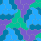
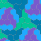

Polyrhombilles, one-sided: isohedral number 4
2 shapes · each shown with one of its simplest grid-aligned tilings, coloured by orbit · all galleries · family table


7-rhombille (one-sided) · k = 4


7-rhombille (one-sided) · k = 4